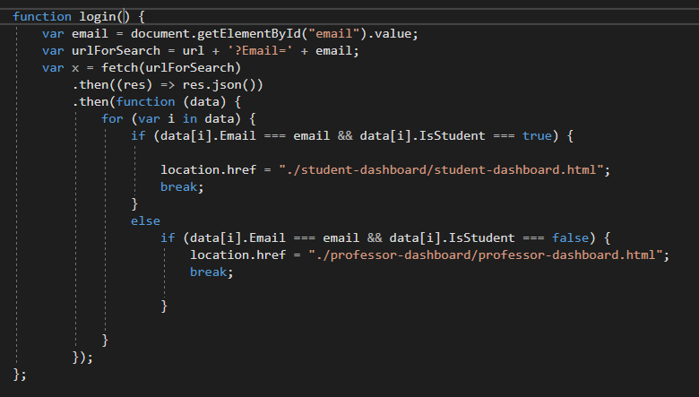

Atter is an application designed for students of Computer Science Faculty of Iasi that has as a purpose the implementation of a system that manages the courses and seminars. Users are of two types, teachers that can register a seminar/course, add marks, notes for students and visualise different reports, and the students that can attend a seminar/course and also see some informations provided by the teacher.
Atter is a Single Page Application, dynamically loading content into the current page without loading an entire page from the server. In this way Atter diminish the necessity of the browser to perform requests to the server which impact in the velocity of the application and the user experience. The concepts used to achieve a Single Page Application are:
The login is made based on the fenrir account provided by the faculty, so each user can be directed to the specific interface that matches his account.
To avoid the cases where a student could sign another one as being present we added in this module the functionality where the teacher will provide some information about a class when it is registered and will receive in return a code that will be used by students to attend a class. Another information worth mentioning is the fact that the teacher also provides the number of students that are present.
Both type of users can see 4 general reports that are representations for: attendance of groups, points received.
As a student, the user can see for each subject informations structured on weeks about his attendance and details given by his teacher
As a professor, the user has for each course/ seminar registered informations structured using visual reports (for attendance and points) and also he can see specific lists of students.
Gets the user back to login page.
The functionalities of the application are structured so each step of the interaction will be in fact a module:

Prototype allows us to hide the complexity of making new instances from the client. The concept is to copy an existing object rather than creating a new instance from scratch, something that may include costly operations. The existing object acts as a prototype and contains the state of the object. The newly copied object may change same properties only if required. This approach saves costly resources and time, especially when the object creation is a heavy process.

JavaScript modules are the most prevalently used design patterns for keeping particular pieces of code independent of other components. This provides loose coupling to support well-structured code. In this application context the modules pattern will be implemented by having a specific module for login, attendClass, registerClass, checkCourses, logout. Modules are following the next structure:

A fetch though the data

var x = document.getElementById("demo");
function getLocation() {
if (navigator.geolocation) {
navigator.geolocation.getCurrentPosition(showPosition);
} else {
x.innerHTML = "Geolocation is not supported by this browser.";
}
}
function showPosition(position) {
x.innerHTML = "Latitude: " + position.coords.latitude +
"Longitude: " + position.coords.longitude;
}
For storing the data we use the Firebase Realtime Database which is a cloud-hosted NoSql database. Data is stored as a JSON tree and synchronized in realtime to every connected client.
The Firebase Realtime Database allows secure access to the database directly from client-side code. Data is persisted locally, and even while offline, realtime events continue to fire, giving the end user a responsive experience. When the device regains connection, the Realtime Database synchronizes the local data changes with the remote updates that occurred while the client was offline, merging any conflicts automatically.
Database structure:

Scheme.org provides a collection of shared vocabularies that can mark the content of a page in a way that can be understood by major search engines. In general, the more content is marked up, the better, but as a general rule there should be marked up only the content that is visible to people that visit the webpage and not content that is hidden.
Following this idea, the login page of this application has been marked up:
Using the vocabulary of RDFa provided by Schema we marked down also the Scholarly HTML report available for our page.
For hosting our site we use Firebase Hosting, is a fully-managed hosting service.
We have chosen this domain for hosting our application because:
Our site is live at the url